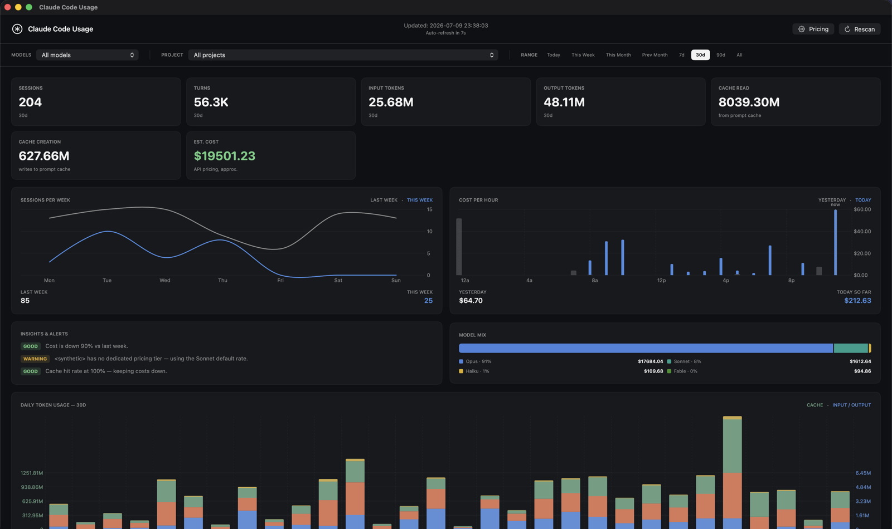
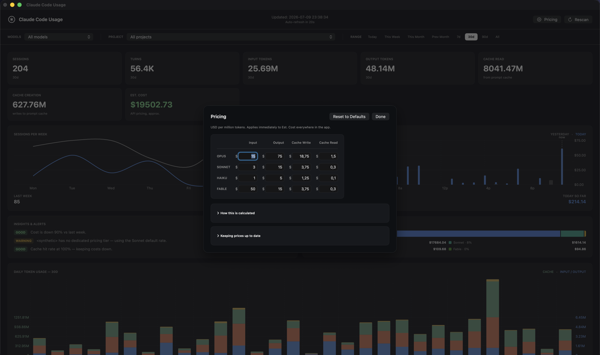

Claude Code quietly writes usage data to local transcripts on every turn. ClaudeCodeUsage turns that into a dashboard you can actually read — sessions, turns, tokens, prompt cache and estimated cost, filterable by model and date range, with a daily usage chart.
## features
A tiny native app that reads the JSONL transcripts Claude Code already writes to ~/.claude/projects, and turns them into a dashboard.
Reads your local transcripts only. Nothing is ever uploaded — the app has no network calls beyond checking for its own updates.
A stacked chart of input, output, cache read and cache creation tokens, per day.
Approximate USD cost per model family, computed from your actual token usage.
Slice by model — Opus, Sonnet, Haiku — and by range: today, this week, 30d, 90d, all time.
Rescans every 30 seconds, incrementally — only newly appended transcript bytes are read.
A small, fast, native macOS app — no Electron, no background daemon.
## screenshots
The real dashboard — sessions and cost trends, automatic insights, model mix, and the daily usage chart — plus the editable pricing sheet.


// why it exists
Claude Code logs token usage on every turn, but there's no built-in way to see the totals. ClaudeCodeUsage sits read-only on top of those transcripts — across every local project — so your sessions, tokens and estimated spend become a single glanceable dashboard.
get started
ClaudeCodeUsage reads the transcripts Claude Code already writes locally — there's nothing else to configure.
ClaudeCodeUsage visualizes its local usage data, so use Claude Code at least once first.
Grab the latest .dmg and drag ClaudeCodeUsage.app into /Applications.
Open it — your usage dashboard populates from your local transcripts within a few seconds.
ready?
Free, open-source and native. macOS 14 Sonoma or later.